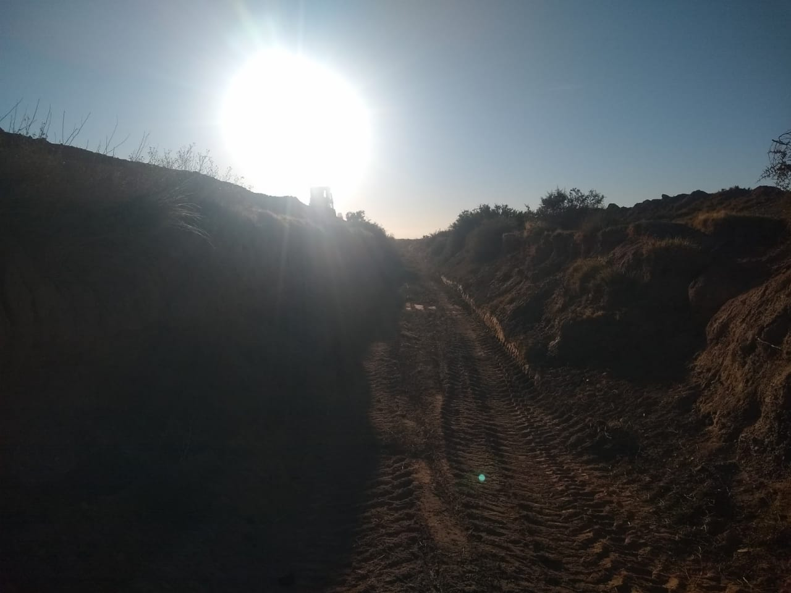
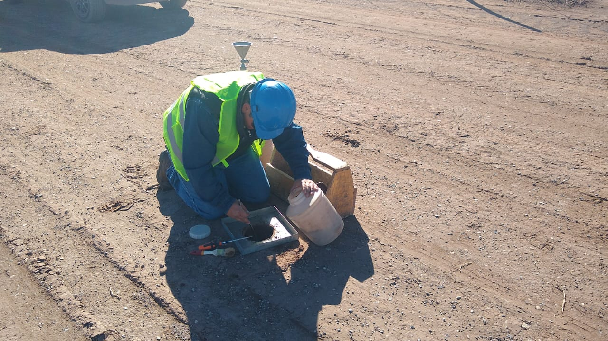

Rechazo en sector obrador

5 de abril 2022
Limpieza en zanja de guardia
6 de abril 2022
Desmonte en límite con terreno este (Francia)
7 de abril 2022
Rechazo en sector obrador
8 de abril 2022
Toma de muestras en área terraplén oeste y norte
Inicio desmonte sector oeste
11 de abril 2022
12 de abril 2022
Ingreso de oficina para inspección
13 de abril 2022
Ingreso de baño químico
14 de abril 2022
Ingreso de 20m3 de estabilizado para cancha de prueba en sector fracción 1
18 de abril 2022
19 de abril 2022
Densidad en:
• cancha de prueba en fracción 1 (estabilizado de ORALCO)
• terraplén oeste
20 de abril 2022
Replanteo de oficina de inspección
Terraplén oeste
Terraplén norte

21 de abril 2022
Hormigón para base de contenedores
Terraplén oeste - base de asiento:
compactación finalizada
22 de abril 2022
Retiro de muestra:
estabilizado de Oralco para proctor y granulometría
Terraplén norte
25 de abril 2022
Instalación de garita de seguridad
Terraplén norte - base de asiento:
compactación finalizada
27 de abril 2022
Sin acceso para bateas por lluvias, se procede a reparación de fracción 1 y curva con 200m 3 de rechazo de Oralco, 4 viajes de ellos y 6 con nuestras bateas
15hs: montaje de oficina de inspección + dos módulos, 4hs de hidrogrúa.
Día sin motoniveladora por reparaciones
28 de abril 2022
Densidad en terraplén norte a 200mts desde oeste, centro, con cono de arena
29 de abril 2022
Segunda carga de caños y accesorios